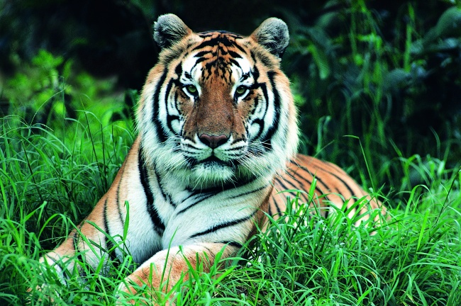
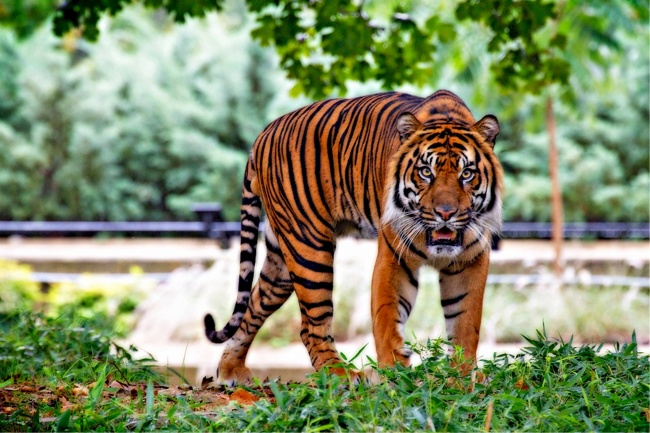

珍惜动物
株洲境内各种野生动物种
群包括鸟类、兽类、爬行类和
昆虫，从调查情况统计，有常
见鸟类50余种，兽类数十种，
爬行类100余种，昆虫1000
余种。
至1990年株洲境内尚存的
主要的兽类国家保护动物有国
家一级保护动物华南虎、云豹，
国家二级保护动物金猫、河麂、
猕猴、水獭、水鹿、穿山甲、果
子狸、豺、小灵猫、大灵猫、苏
门羚、毛冠鹿，三级保护动物
黄鼬、豪猪、刺猬、狐、青鼬、
华南兔等。
- 兽类保护动物
- 鸟类保护动物
- 爬行类保护动物
-
华南虎国家一级保护野生动物食肉目 | 猫科 | 豹亚科 | 豹属拉丁文名：Panthera tigris Amoyensis体 型：体长雄虎2.5米，雌虎2.3米；体重雄虎150千克，雌虎120千克；尾长80-100厘米。简 介：华南虎 （厦門虎，南中国虎）于1981年 被列入CITES公约附录Ⅰ保护名单，亦称“中国虎”，华南虎头圆，耳短，四肢粗大有力，尾较长，胸腹部杂有较多的乳白色，全身橙黄色并布满黑色横纹。华 南虎的毛皮上有既短又窄的条纹，条纹的间距较孟加拉虎、东北虎的大，体侧还常出现菱形纹，在亚种老虎中体型较小。是中国的十大濒危动物之一、国家一 级保护动物，红色物种名录极度濒危，在野外已灭绝。华南虎是典型的山地林栖动物，生活在中国南方的热带雨林、常绿阔叶林，也常出没于山脊、矮林灌丛和 岩石较多或砾石塘等山地落叶阔叶林和针阔叶混交林。华南虎以草食性动物野猪、鹿、狍等为食，雄性华南虎则会攻击较大型的猎物，如黑熊及马来熊等。
-
华南虎2国家一级保护野生动物食肉目 | 猫科 | 豹亚科 | 豹属拉丁文名：Panthera tigris Amoyensis体 型：体长雄虎2.5米，雌虎2.3米；体重雄虎150千克，雌虎120千克；尾长80-100厘米。简 介：华南虎 （厦門虎，南中国虎）于1981年 被列入CITES公约附录Ⅰ保护名单，亦称“中国虎”，华南虎头圆，耳短，四肢粗大有力，尾较长，胸腹部杂有较多的乳白色，全身橙黄色并布满黑色横纹。华 南虎的毛皮上有既短又窄的条纹，条纹的间距较孟加拉虎、东北虎的大，体侧还常出现菱形纹，在亚种老虎中体型较小。是中国的十大濒危动物之一、国家一 级保护动物，红色物种名录极度濒危，在野外已灭绝。华南虎是典型的山地林栖动物，生活在中国南方的热带雨林、常绿阔叶林，也常出没于山脊、矮林灌丛和 岩石较多或砾石塘等山地落叶阔叶林和针阔叶混交林。华南虎以草食性动物野猪、鹿、狍等为食，雄性华南虎则会攻击较大型的猎物，如黑熊及马来熊等。
-
华南虎国家一级保护野生动物食肉目 | 猫科 | 豹亚科 | 豹属拉丁文名：Panthera tigris Amoyensis体 型：体长雄虎2.5米，雌虎2.3米；体重雄虎150千克，雌虎120千克；尾长80-100厘米。简 介：华南虎 （厦門虎，南中国虎）于1981年 被列入CITES公约附录Ⅰ保护名单，亦称“中国虎”，华南虎头圆，耳短，四肢粗大有力，尾较长，胸腹部杂有较多的乳白色，全身橙黄色并布满黑色横纹。华 南虎的毛皮上有既短又窄的条纹，条纹的间距较孟加拉虎、东北虎的大，体侧还常出现菱形纹，在亚种老虎中体型较小。是中国的十大濒危动物之一、国家一 级保护动物，红色物种名录极度濒危，在野外已灭绝。华南虎是典型的山地林栖动物，生活在中国南方的热带雨林、常绿阔叶林，也常出没于山脊、矮林灌丛和 岩石较多或砾石塘等山地落叶阔叶林和针阔叶混交林。华南虎以草食性动物野猪、鹿、狍等为食，雄性华南虎则会攻击较大型的猎物，如黑熊及马来熊等。
-
华南虎2国家一级保护野生动物食肉目 | 猫科 | 豹亚科 | 豹属拉丁文名：Panthera tigris Amoyensis体 型：体长雄虎2.5米，雌虎2.3米；体重雄虎150千克，雌虎120千克；尾长80-100厘米。简 介：华南虎 （厦門虎，南中国虎）于1981年 被列入CITES公约附录Ⅰ保护名单，亦称“中国虎”，华南虎头圆，耳短，四肢粗大有力，尾较长，胸腹部杂有较多的乳白色，全身橙黄色并布满黑色横纹。华 南虎的毛皮上有既短又窄的条纹，条纹的间距较孟加拉虎、东北虎的大，体侧还常出现菱形纹，在亚种老虎中体型较小。是中国的十大濒危动物之一、国家一 级保护动物，红色物种名录极度濒危，在野外已灭绝。华南虎是典型的山地林栖动物，生活在中国南方的热带雨林、常绿阔叶林，也常出没于山脊、矮林灌丛和 岩石较多或砾石塘等山地落叶阔叶林和针阔叶混交林。华南虎以草食性动物野猪、鹿、狍等为食，雄性华南虎则会攻击较大型的猎物，如黑熊及马来熊等。
-
华南虎国家一级保护野生动物食肉目 | 猫科 | 豹亚科 | 豹属拉丁文名：Panthera tigris Amoyensis体 型：体长雄虎2.5米，雌虎2.3米；体重雄虎150千克，雌虎120千克；尾长80-100厘米。简 介：华南虎 （厦門虎，南中国虎）于1981年 被列入CITES公约附录Ⅰ保护名单，亦称“中国虎”，华南虎头圆，耳短，四肢粗大有力，尾较长，胸腹部杂有较多的乳白色，全身橙黄色并布满黑色横纹。华 南虎的毛皮上有既短又窄的条纹，条纹的间距较孟加拉虎、东北虎的大，体侧还常出现菱形纹，在亚种老虎中体型较小。是中国的十大濒危动物之一、国家一 级保护动物，红色物种名录极度濒危，在野外已灭绝。华南虎是典型的山地林栖动物，生活在中国南方的热带雨林、常绿阔叶林，也常出没于山脊、矮林灌丛和 岩石较多或砾石塘等山地落叶阔叶林和针阔叶混交林。华南虎以草食性动物野猪、鹿、狍等为食，雄性华南虎则会攻击较大型的猎物，如黑熊及马来熊等。
-
华南虎2国家一级保护野生动物食肉目 | 猫科 | 豹亚科 | 豹属拉丁文名：Panthera tigris Amoyensis体 型：体长雄虎2.5米，雌虎2.3米；体重雄虎150千克，雌虎120千克；尾长80-100厘米。简 介：华南虎 （厦門虎，南中国虎）于1981年 被列入CITES公约附录Ⅰ保护名单，亦称“中国虎”，华南虎头圆，耳短，四肢粗大有力，尾较长，胸腹部杂有较多的乳白色，全身橙黄色并布满黑色横纹。华 南虎的毛皮上有既短又窄的条纹，条纹的间距较孟加拉虎、东北虎的大，体侧还常出现菱形纹，在亚种老虎中体型较小。是中国的十大濒危动物之一、国家一 级保护动物，红色物种名录极度濒危，在野外已灭绝。华南虎是典型的山地林栖动物，生活在中国南方的热带雨林、常绿阔叶林，也常出没于山脊、矮林灌丛和 岩石较多或砾石塘等山地落叶阔叶林和针阔叶混交林。华南虎以草食性动物野猪、鹿、狍等为食，雄性华南虎则会攻击较大型的猎物，如黑熊及马来熊等。